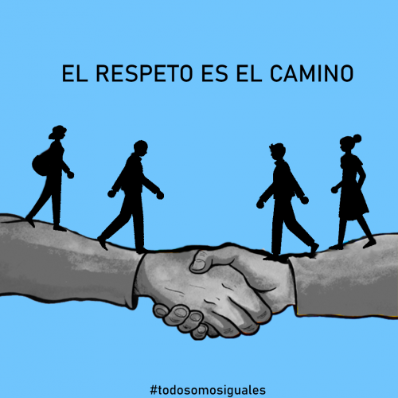

Para alcanzar una vida plena y cumplir con tu responsabilidad social, podemos implementar varias
estrategias
basadas en la ética, estrategias como:
-Educación y conciencia: Investiga y sé consciente de los problemas sociales y éticos que enfrenta tu
comunidad y el mundo en general. Aprende sobre temas como la pobreza, la desigualdad, la justicia social
y
el medio ambiente. La educación te ayudará a comprender mejor los desafíos y las posibles soluciones.

-Empatía y respeto: Practica la empatía en tus interacciones diarias. Trata a los demás con respeto,
comprensión y consideración. Reconoce la diversidad y valora las perspectivas y experiencias de las
personas que son diferentes a ti. Aboga por la igualdad y la inclusión en todas las áreas de la vida.

-Consumo responsable: Considera las implicaciones éticas de tus decisiones de compra. Apoya a empresas y
marcas que sean social y ambientalmente responsables. Elige productos que sean sostenibles, éticos y
respetuosos con los derechos humanos. Reduce el consumo excesivo y evita el desperdicio.
-Ética profesional: Si tienes una profesión o carrera, busca ejercerla de manera ética. Cumple con altos
estándares de integridad y responsabilidad en tu trabajo. Considera cómo tus habilidades y conocimientos
pueden contribuir al bienestar social y trabaja para hacer una diferencia positiva en tu campo.